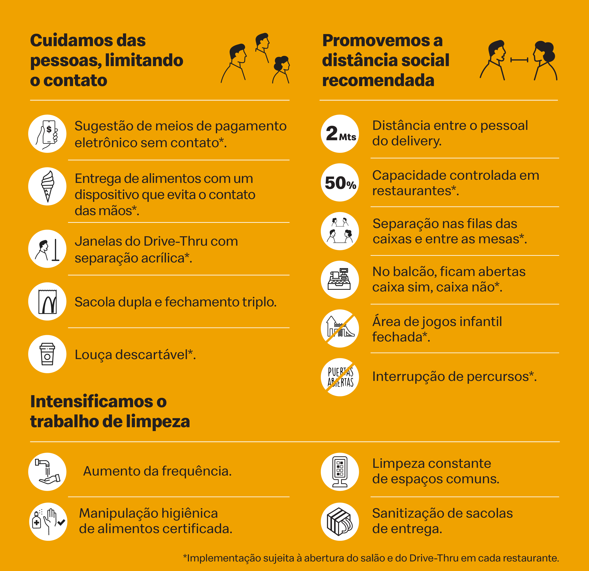

O Lanche Prime, a maior franquia independente do LC Prime no mundo, continua operando com os procedimentos mais estritos de prevenção, garantindo, hoje e sempre, o maior cuidado tanto para seus clientes quanto para seus funcionários.
Estas são as medidas de proteção através das quais a companhia continua garantindo uma experiência segura em todos seus restaurantes:
